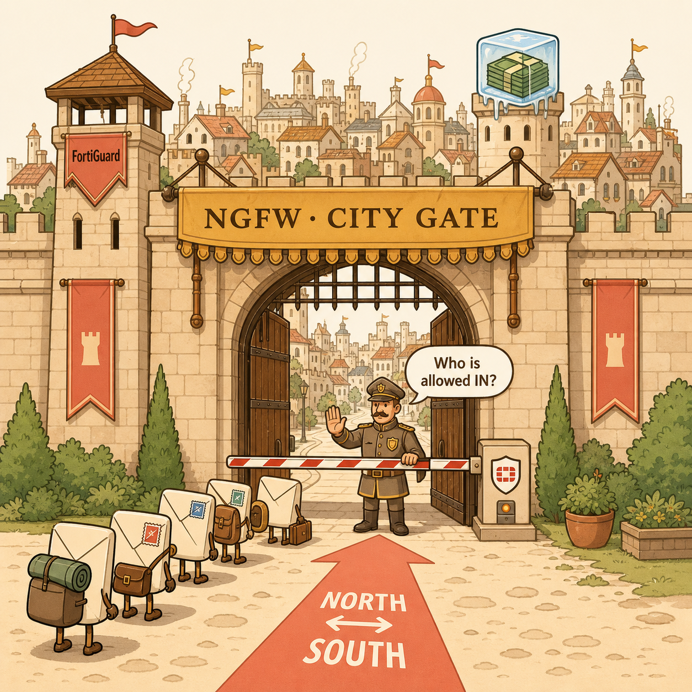
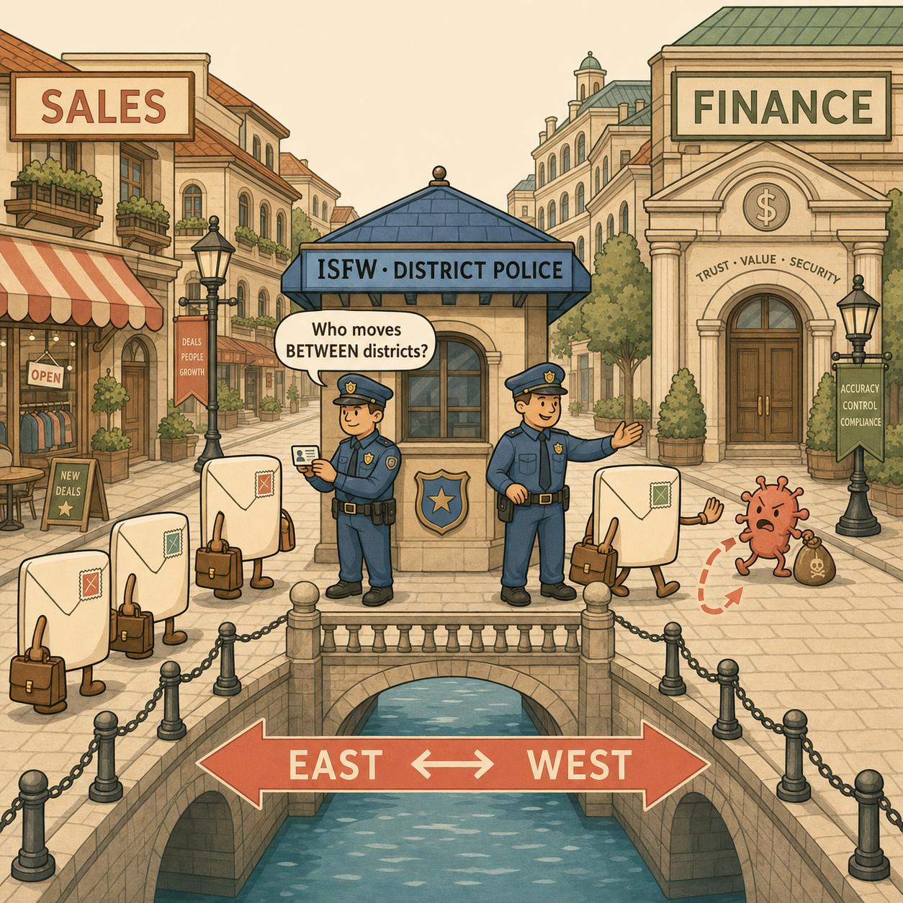
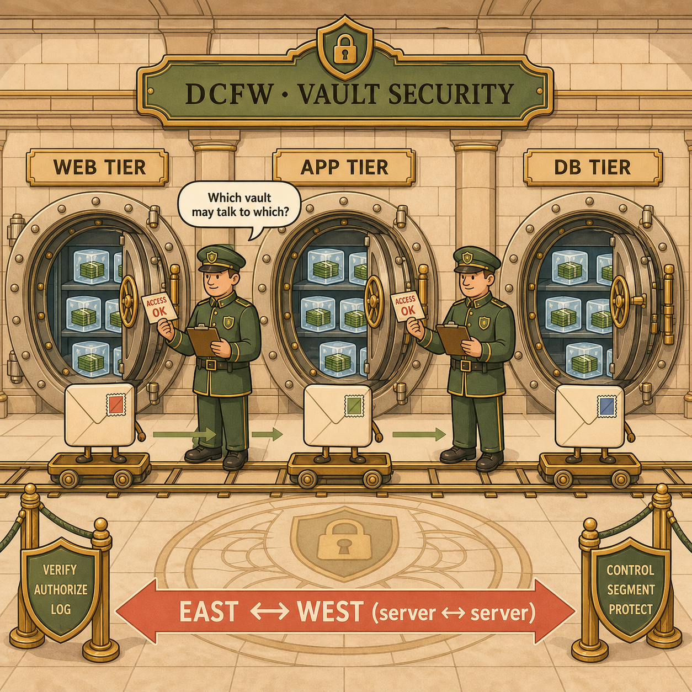
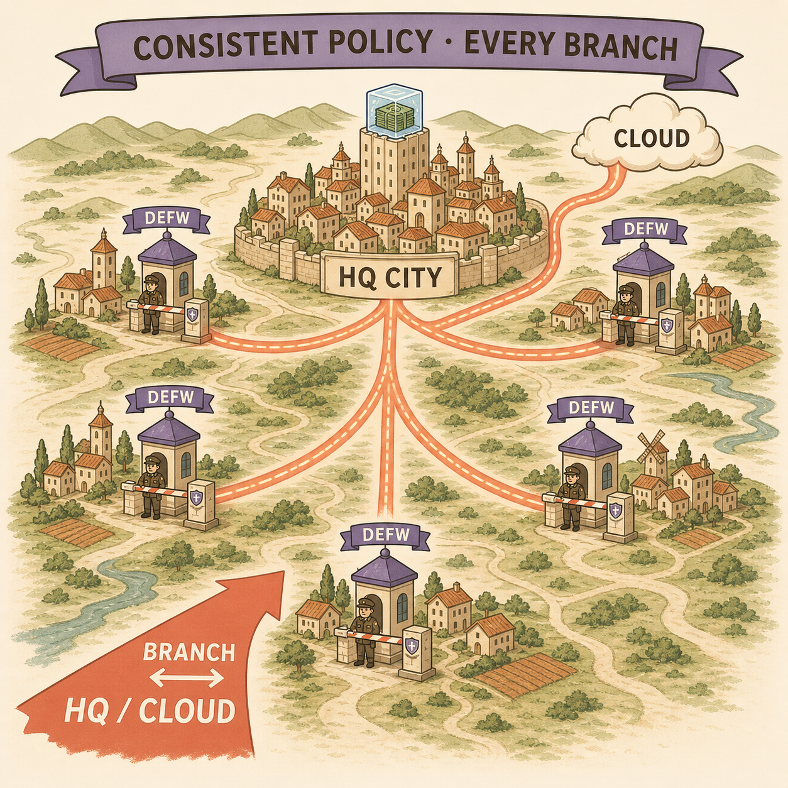

NGFW, DCFW, ISFW, DEFW — the role is decided by where it sits, not what box it is.
Stop memorising acronyms. Start thinking in responsibilities.
Once you can answer "what am I protecting?" and "what traffic flows through here?", the role names them for you.
The Memory Trick
Imagine a city
Every firewall role is just a guard standing at a different point in the same city. Same uniform, same training — different post, different question they're asking of everyone who approaches.
🏰
NGFW
The City Gate
"Who is allowed into the city?"
Enterprise Edge · North–South

The City Gate — NGFW
A single fortified gate deciding who enters the whole city. North–South traffic in and out of the enterprise edge.
🚓
ISFW
The Police Inside
"Who is allowed to move between districts?"
Internal Segments · East–West

The Police Inside — ISFW
District-to-district checkpoints stopping lateral movement inside the city. East–West traffic between internal segments.
🏦
DCFW
The Vault Security
"Who is allowed inside the bank vault?"
Data Centre · East–West (Server↔Server)

The Vault Security — DCFW
Tight tier-to-tier guards inside the bank, controlling who talks to which vault. East–West server-to-server, high throughput.
🛣️
DEFW
The Border Checkpoints
"How do all our remote towns connect back safely?"
Distributed Branches · Branch↔HQ/Cloud

The Border Checkpoints — DEFW
Identical checkpoints at every remote town connecting back to HQ and cloud. Consistency and scale across distributed branches.
📌
Anchor
Gate keeps outsiders out. Police stop lateral movement. Vault guards the crown jewels. Border ties the whole region together.
Side by Side
Role, purpose, and the traffic it sees
The traffic direction is the giveaway. North–South means in-and-out of the enterprise; East–West means lateral, inside movement.
Role
Primary Purpose
Typical Traffic
NGFW
Protect the enterprise edge
North–South (Internet ↔ Enterprise)
DCFW
Protect applications and servers
East–West (Server ↔ Server)
ISFW
Prevent lateral movement between internal segments
East–West (User ↔ User / Department)
DEFW
Enforce policy consistently across distributed branches
Branch ↔ HQ / Cloud / Internet
The Real Lesson
The role isn't the hardware
Here's the part that unlocks the exam: the firewall role isn't determined by the box. It's determined by where it sits in the topology, what traffic it sees, and what business outcome it protects.
A single FortiGate can technically perform any of these roles. We give them names like NGFW, DCFW, ISFW, and DEFW to communicate their architectural purpose — not their model number. Once that clicks, NSE7 design questions get much easier, because you stop thinking in features and start thinking in responsibilities.
Two questions solve almost every design question:
1. What assets am I protecting?
2. What kind of traffic flows through this firewall?
Answer those two, and the correct role almost always names itself. That architectural way of thinking is far more valuable than memorising the acronyms.
Test Yourself
Which firewall would you choose?
Read each scenario. Ask the two questions. Commit to an answer before you reveal it — the reasoning matters more than the label.
Question 1
LoFinance is worried that if one desktop in the sales department gets infected with malware, it will spread sideways to the finance department's workstations on the same internal network. Which firewall role addresses this?
Hint: The threat is already inside the city walls. Which guard stops movement between districts?
→ ISFW (Internal Segmentation Firewall)
The asset is internal user segments, and the traffic is East–West (user↔user). The whole point of an ISFW is to prevent lateral movement once a threat is already past the edge. The NGFW at the gate can't help — the malware never crossed it.
Question 2
LoFinance needs to inspect and control all traffic arriving from the Internet before it reaches anything inside the company — applying IPS, web filtering, and application control at the perimeter. Which role fits?
Hint: Who decides who is allowed into the city in the first place?
→ NGFW (Next-Generation Firewall)
The asset is the entire enterprise, and the traffic is North–South (Internet↔Enterprise). The NGFW is the city gate — it protects the edge and is where the heavy security profiles typically live for inbound/outbound traffic.
Question 3
A LoFinance application server and its database server sit in the data centre and talk to each other constantly. Security wants to ensure the web tier can only reach the DB tier on approved ports, with no server able to freely reach another. Which role?
Hint: The crown jewels are the servers themselves, and the chatter is server-to-server.
→ DCFW (Data Centre Firewall)
The asset is applications and servers, and the traffic is East–West (server↔server). A DCFW protects the vault — it segments the application tiers so a compromised web server can't roam freely toward the database. High throughput, low latency, tight tier-to-tier rules.
Question 4
LoFinance is opening twelve new branch offices. Leadership wants the same security policy enforced identically at every branch, with traffic tunnelling safely back to HQ and cloud. Which role describes these firewalls?
Hint: Lots of remote towns, one region. How do they all connect back consistently?
→ DEFW (Distributed Enterprise Firewall)
The asset is consistent policy across many sites, and the traffic is Branch↔HQ/Cloud/Internet. DEFWs are the border checkpoints — the emphasis is consistency and scale across distributed locations (often managed centrally, frequently with SD-WAN), not defending a single choke point.
Question 5 · Stretch
An exam question shows a FortiGate model and asks you to identify its role. The candidate next to you says "that model is always an NGFW." Why is that reasoning flawed?
Hint: Go back to the real lesson. What actually determines the role?
→ The role isn't set by the hardware
The same FortiGate can play any of the four roles. Role is decided by where it sits in the topology, what traffic it sees, and what it protects — not the model number. To answer correctly, look at the placement and traffic direction in the diagram, then ask the two questions: what am I protecting, and what traffic flows through here?